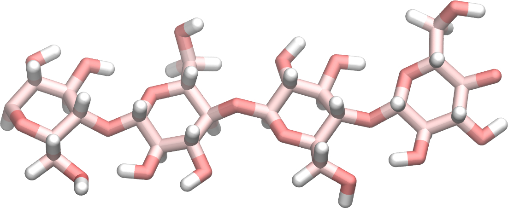

Water induced swelling of cellulose
Adsorption of water in cellulose using the grand canonical Monte Carlo method.
Objective: The purpose of this tutorial is to use molecular dynamics and simulate the adsorption of water molecule in a block of cellulose, and measure the water induced swelling of the cellulose. If you already have a good grasp on LAMMPS, you can download directly the input scripts that will be written following this tutorial by clicking here.
Prerequisite: If you are new to LAMMPS, I recommend you to follow tutorial 01 first.
Note 1 - If you have any suggestion about these tutorials, please contact me by email at simon.gravelle at live.fr.
Note 2 - You can support me for 1 euro per month by clicking here. For a larger amount, I offer you personal assistance with you LAMMPS scripts.
Generation of the cellulose block
Let us generate a block of cellulose. To do so, we are going to replicate a single cellulose Iβ molecule. The data file for the cellulose molecule can be downloaded by clicking here. This data file contains the coordinates of the atoms as well as the constraints between atoms (bonds, angles and dihedrals), and can be directly read by LAMMPS using the read_file command. The molecule looks like this,

where the carbon atoms are in pink, the oxygen in red, and the hydrogen in white. Let us replicate this molecule using LAMMPS, and equilibrate the structure to obtain a block of cellulose. To do so, we are going to first thermalise the system at large pressure and large temperature, which will allow for the mixing of the cellulose molecules, before cooling down the system to ambient atmospheric conditions.
Create a new input file in the same folder as the downloaded tutorial05_celluloseIB.data, and copy the following line in it.
##################
# Initialization #
##################
units real
boundary p p p
atom_style full
bond_style harmonic
angle_style harmonic
dihedral_style harmonic
pair_style lj/cut/tip4p/long 7 8 7 13 0.1546 12.0
pair_modify mix arithmetic tail yes
kspace_style pppm/tip4p 1.0e-4
Note that, even though there are no water molecules in the system, we are anticipating by using the lj/cut/tip4p/long fix, with water oxygen and hydrogen atoms having the indexes 7 and 8, respectively. For this first step, we could have used
pair_style lj/cut/coul/long 12.0
kspace_style pppm 1.0e-4
and obtained the same results, but modifications would have been required later.
Then, let us read the data file and replicate the system by adding the following lines to the input.lammps file
#####################
# System definition #
#####################
read_data tutorial05_celluloseIB.data
replicate 4 4 2
and then also add the parameters
#######################
# Simulation settings #
#######################
include tutorial05_PARM
dump dp1 all atom 10000 dump.lammpstrj
where the tutorial05_PARM file can be downloaded by clicking here. Finally, let us perform multiple molecular dynamics steps in order to obtain a dense block of cellulose, and write the final state in a data file named tutorial05_equilibrium.data.
#######
# Run #
#######
velocity all create 1000 542121 mom yes rot yes dist gaussian
fix mynve all nve
fix myber all temp/berendsen 1000.0 1000.0 100
timestep 0.1
thermo 1000
run 5000
unfix mynve
unfix myber
fix mynpt all npt temp 1000 1000 100 aniso 100.0 100.0 1000.0
run 200000
fix mynpt all npt temp 1000 300 100 aniso 100.0 1.0 1000.0
run 200000
fix mynpt all npt temp 300 300 100 aniso 1.0 1.0 1000.0
run 200000
write_data tutorial05_equilibrium.data
The first step of 5000 timesteps is performed in the NVT ensemble (constant number of molecules, volume, and temperature), obtained by combining a fix nve with a Berendsten thermostat. This step allows the system to relax relatively gently. Then, 3 successive steps of 200000 timesteps each are performed in the NPT ensemble (constant number of molecules, pressure, and temperature), allowing the system to relax in volume. The final configuration looks like this:
 Alternatively, you can download the final data file by clicking here.
Alternatively, you can download the final data file by clicking here.
Addition of water
In order to add the water molecules, we are going to use the Monte Carlo method in the grand canonical ensemble (GCMC). In short, the system is put in contact with a virtual reservoir of given chemical potential, and multiple attempts to insert water molecules at random positions are made. Attemps are either accepted or rejected based on an acceptance rule.Note 3 - Cellulose is a hygroscopic material that swell with water. However, GCMC simulations are performed at constant volume (ie they do not allow the volume of the box to adjust). Therefore, we are going to alternate between GCMC steps and NPT steps. This method is sometimes called hybrid GCMC-NPT.In a different folder, copy the data file previously generated as well as the parameters file previously used. Also copy the TIP4P2005.txt file which contains the information concerning the water model. Create a new input file, and copy the following lines into it: